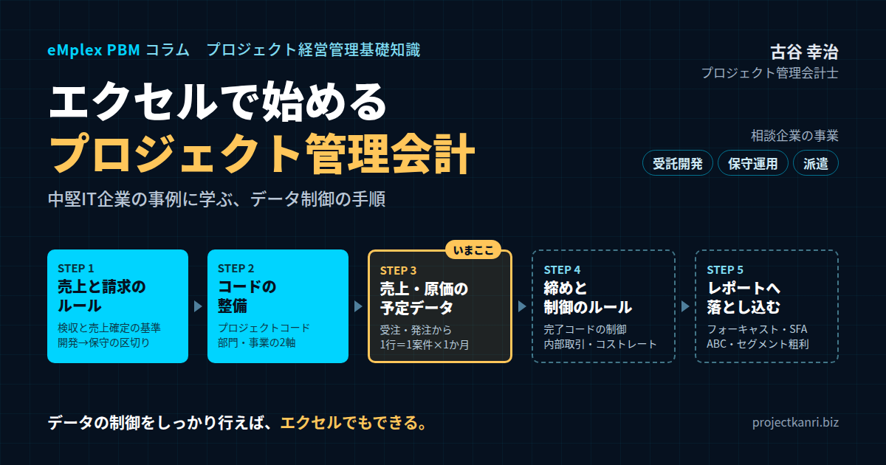

エクセルで始めるプロジェクト管理会計―中堅IT企業の事例に学ぶ、データ制御の手順
結論：データの制御をしっかり行えば、エクセルでもプロジェクト管理会計は始められる
最初に結論を申し上げます。プロジェクト管理会計は、専用のシステムがなければ始められないものではありません。売上と請求のルール、プロジェクトコードの採番、部門のコード、締めのルールといった「データの制御」をしっかりと行えば、エクセルでも、経営の判断に使えるプロジェクト管理会計のデータを作ることができます。逆に言えば、データの制御ができていなければ、どれほど高価なシステムを導入しても、使える数字は出てきません。プロジェクト管理会計の出発点は、道具ではなく、ルールなのです。
先日、ある中堅のIT企業の役員の方から、ご相談をいただきました。「専用のシステムを入れる前に、まずはエクセルでプロジェクト管理会計を始めたい。何から手をつければよいか」というご相談です。この会社は、受託のシステム開発、システムの保守と運用、そしてエンジニアの派遣という、三つの事業を営んでいます。売上の規模は数十億円、社員は数百名。事業は順調に成長してきたものの、案件ごとの採算や、事業ごとの利益が、経営陣からよく見えていないという課題を抱えていました。
月次の決算は会計ソフトで締めていますが、案件ごとの数字は、各部門の担当者がそれぞれのエクセルで管理していました。部門によって、売上をいつ計上するのか、案件にどのような番号を振るのかがばらばらで、全社で集計しようとすると、数字が合わない。経営会議に出てくる案件の一覧も、部門ごとに形式が違い、比べることができない。役員の方は、「数字はたくさんあるのに、使える数字がない」とおっしゃっていました。
受託開発、保守運用、派遣という三つの事業は、売上の立ち方も、原価の構造も、利益の出方も大きく異なります。受託開発は、案件ごとの採算のばらつきが大きく、検収の時期によって月ごとの売上が大きく動きます。保守運用は、月額の契約によって安定した売上が見込める一方、少しずつ作業が増えて採算が悪化しやすい事業です。派遣は、エンジニアの稼働に応じて売上が立ち、単価と人件費の差が利益になります。この三つを同じ物差しで一緒に見ていては、どの事業がどれだけ会社に貢献しているのかは分かりません。事業ごとに数字を分けて見ることが、この会社の最初の課題でした。
このような状況は、成長してきた中堅のIT企業では、決して珍しくありません。私はこれまで200社を超えるプロジェクト型企業の経営管理を支援してきましたが、システムの導入の前に、データのルールを整えることから始めた会社ほど、その後の仕組みづくりがうまく進むことを繰り返し見てきました。
この会社で私がご提案したのは、次のような順番で、データの制御を一つずつ固めていくことです。
私自身、エンプレックスでCFOを務めていた頃、システムを導入する前の段階で、エクセルを使って案件ごとの収支の管理を立ち上げた経験があります。そのときも、最初に時間をかけたのは、売上の計上の基準と、案件のコードの体系を決めることでした。ルールが固まってからは、エクセルでも案件ごとの採算を毎月経営会議に出せるようになり、その後のシステムの導入も、決めたルールをそのまま設計に移すだけで済みました。
最初に、売上と請求のルールを明確にする。次に、プロジェクトコードの採番の体系、部門と組織のコードを整え、受注のデータから売上の予定のデータを、発注のデータから原価の予定のデータを、同じ形式に並べ替える。そのうえで、締めのルール、売上の完了後のプロジェクトコードの制御、内部の売上と内部の費用の扱い、そしてコストレートのあり方を、順番に決めていく。こうして整えたデータをもとに、レベニューフォーキャスト、営業の見込み案件との連携、ABC分析、セグメント別の売上高と粗利益の一覧といったレポートへと落とし込んでいく。
本稿では、この会社での取り組みを題材に、エクセルでプロジェクト管理会計を始める際の手順と、各段階で決めるべきルールを、実務の視点から順番にお伝えします。現在、この会社では、売上の予定のデータの整理に取り組んでいるところです。まさに進行中の取り組みであり、同じような課題を抱える会社の方にとって、具体的な手がかりになると考えています。
なお、以前のコラム「エクセルの限界突破：不動産予実管理の改革」では、エクセルに頼り続けることの限界をお伝えしました。本稿は、その主張と矛盾するものではありません。エクセルの限界は、ルールのないまま個人の工夫で管理を続けることにあります。ルールを先に決め、データを制御したうえでエクセルを使えば、エクセルは、プロジェクト管理会計を始めるための十分な道具になります。そして、ルールが固まった後でシステムに移行すれば、移行もずっと滑らかになるのです。
最初に整えたのは、売上と請求のルール
この会社で、最初に取り組んだのは、売上と請求のルールを明確にすることでした。なぜここから始めるのか。それは、売上の計上のルールが不明確なままでは、案件の採算も、事業ごとの利益も、正しく測ることができないからです。そして、この会社にとって特に大きな問題だったのが、受託開発の案件から保守のフェーズへの移行が、うまく管理できていないことでした。
受託開発の案件は、システムを開発し、顧客に納品し、顧客の検収を受けて完了します。その後、多くの場合、同じ顧客との間で、システムの保守や運用の契約が始まります。ところが、この会社では、受託開発の売上をいつ計上するのか、検収をどの時点とするのかのルールが曖昧でした。部門によっては、システムを納品した時点で売上を計上し、別の部門では、顧客から検収書を受け取った時点で計上していました。さらに、検収の後に発生した不具合の修正や小さな改修を、開発の案件の延長として処理するのか、保守の契約の中で対応するのかも、担当者の判断に委ねられていました。
その結果、開発の案件がいつ終わり、保守の契約がいつ始まったのかが、数字の上で区切られていませんでした。開発の案件の原価が保守の期間に入っても計上され続け、開発の採算は実態より悪く、保守の採算は実態より良く見える。あるいは、その逆が起きる。開発と保守の事業の利益を正しく比べることができない状態でした。
そこで私がアドバイスしたのは、まず、顧客との検収のルールと、社内での売上の確定のルールを、明確にすることです。
受託開発の案件については、顧客との契約の段階で、何をもって検収とするのか、検収書をいつ受け取るのかを明確にします。社内では、顧客から検収書を受け取った日を、売上の確定の日とするルールにしました。納品しただけでは売上は確定せず、検収書という客観的な証拠がそろった時点で確定する。この基準を全部門で統一したのです。そして、検収をもって開発の案件は完了とし、それ以降の作業は、保守の契約の中で扱うか、別の改修の案件として新たに受注するかのどちらかにする、というルールも決めました。
保守と運用の契約については、月額で契約していることが多いため、契約の期間にわたって、毎月一定の売上を計上するルールにしました。年間の保守料を一括で受け取る契約であっても、売上は契約の期間に応じて月ごとに按分して計上します。
エンジニアの派遣については、毎月の稼働の実績に基づいて、顧客に請求する金額が確定します。顧客から稼働の実績の確認を受けた時点で、その月の売上を確定するルールにしました。
ここで大切なのは、売上の確定と、請求のタイミングを区別することです。売上を計上する時期と、顧客に請求書を発行する時期は、必ずしも同じではありません。年間の保守料を前もって請求する場合には、請求は先、売上は後になります。逆に、受託開発で、検収の後に分割で請求する場合には、売上は先、請求は後になります。売上のルールと請求のルールを、それぞれ明確にし、両者の関係を説明できる状態にしておくことが、正確なデータの土台になります。
なお、会計上の収益の認識の方法は、契約の内容によって判断が分かれることがあります。管理会計のルールを決める際にも、会計上の扱いとの関係は、監査人や顧問税理士と確認しておくことをお勧めします。
売上のルールを決める際には、例外の扱いもあわせて決めておくことが大切です。たとえば、顧客の都合で検収書の発行が遅れている場合、検収の実態はあっても書類が届いていない場合、検収の後に追加の修正を求められた場合。こうした場面で、売上を確定させるのか、保留するのかを、あらかじめ決めておけば、担当者ごとに判断が揺れることを防げます。判断に迷う事例が出てきたら、その都度ルールに追記していきます。
プロジェクトコードの採番と、部門・組織のコード
売上と請求のルールが固まったら、次に整理するのが、プロジェクトコードの採番の体系です。
プロジェクトコードは、案件ごとのすべての数字を結びつけるための鍵です。受注、売上、外注の発注、原価、工数、請求。これらのデータに、同じプロジェクトコードが付いていて初めて、案件ごとの収支を集計することができます。エクセルで管理する場合、プロジェクトコードは、異なるシートや異なるファイルのデータを結びつけるための唯一の手がかりになります。コードの体系が乱れていれば、データを結びつけることはできません。
この会社では、部門ごとに独自の番号の付け方をしていたため、同じ番号が別の部門の別の案件に使われていたり、一つの案件に複数の番号が付いていたりしました。そこで、全社で統一した採番の体系を作りました。
私がお勧めしたのは、コードの中に、事業の区分、受注の年度、連番を含める形です。たとえば、受託開発はD、保守と運用はM、派遣はSという事業の区分の記号を先頭に置き、その後に受注の年度、四桁の連番を続けます。一つの案件の中で、段階的に契約や検収がある場合には、末尾に枝番を付けます。コードを見るだけで、どの事業の、いつの案件なのかが分かるようにするのです。
ここで重要なのが、受託開発の案件と、その後の保守の契約には、別のプロジェクトコードを振ることです。先ほど述べたように、検収をもって開発の案件は完了とし、保守は新しいコードで管理します。開発と保守が同じコードのままだと、売上も原価も混ざってしまい、事業ごとの採算を分けることができません。保守のコードには、元になった開発の案件のコードを、関連する情報として記録しておけば、顧客ごとに開発から保守までの一連の取引を追うこともできます。
案件に紐づかない社内の業務のためのコードも用意します。営業の活動、社内の業務の改善、教育研修、管理の業務、そして案件の合間の待機の時間。こうした社内のコードがなければ、社員の工数を正しく記録することができません。
次に、部門と組織のコードです。ここでは、組織を「機能別」に切るのか、「事業別」に切るのかという、大きな論点があります。
機能別の組織とは、開発部、インフラ部、営業部といったように、仕事の種類や技術の領域で部門を分ける形です。専門性を高めやすく、人材の育成もしやすい一方で、一つの事業の数字が複数の部門にまたがるため、事業ごとの採算が見えにくくなります。
事業別の組織とは、受託開発事業部、保守運用事業部、派遣事業部といったように、事業ごとに部門を分ける形です。事業ごとの採算が明確になり、事業の責任者が損益に責任を持ちやすい一方で、同じ技術を持つ人材が事業ごとに分かれ、人材の融通が利きにくくなります。
この会社の場合、実際の組織は、技術の領域ごとの機能別に近い形でした。一方で、経営陣が知りたいのは、受託開発、保守運用、派遣という事業ごとの採算でした。そこで私がお勧めしたのは、組織の形を無理に変えるのではなく、コードの持ち方で両方の切り口に対応することです。社員や費用には、所属する部門のコード、つまり機能別のコードを付けます。一方、案件には、事業の区分を付けます。プロジェクトコードの先頭の記号が、そのまま事業の区分になっているため、案件の売上と原価は事業ごとに集計できます。社員の工数がどの案件に投入されたのかが分かれば、機能別の部門の人件費を、事業ごとの案件の原価に配分できます。
こうして、部門のコードと事業の区分という二つの軸を持つことで、機能別の部門ごとの管理と、事業別のセグメントごとの採算の両方を、同じデータから見られるようになります。エクセルであれば、案件の一覧に事業の区分の列を、社員の一覧に部門のコードの列を用意しておけば、ピボットテーブルで、どちらの切り口でも集計することができます。
コードの体系を変える際には、過去のデータの扱いも決めておく必要があります。過去の案件のデータを、すべて新しいコードに付け替えるのは大きな手間です。この会社では、新しい体系は今期から適用し、過去の主要な案件については、旧コードと新コードの対応表を作って、比較が必要な場合に参照できるようにしました。過去を完璧に揃えることよりも、これからのデータを正しく揃えることを優先したのです。
部門のコードについても、組織の改編に備えておく必要があります。部門の統合や分割が行われると、過去の部門のコードと新しい部門のコードの対応が分からなくなり、前年との比較ができなくなります。部門のコードの一覧に、有効な期間の列を設け、改編の際には新旧の対応を記録しておくことで、組織が変わっても数字の連続性を保つことができます。
受注データから売上予定データへ、発注データから原価予定データへ
コードの体系が整ったら、次は、案件の将来の売上と原価を見通すためのデータを整理します。具体的には、受注のデータから売上の予定のデータを、発注のデータから原価の予定のデータを作り、同じ形式に並べ替えることです。この会社では、現在、まさにこの売上の予定のデータの整理に取り組んでいるところです。
受注のデータには、案件のコード、顧客、受注の金額、契約の期間といった情報があります。しかし、そのままでは、どの月にいくらの売上が計上されるのかは分かりません。そこで、先ほど決めた売上のルールに沿って、受注のデータを、月ごとの売上の予定のデータに並べ替えます。
受託開発の案件であれば、検収の予定の月に、受注の金額を売上の予定として置きます。段階的に検収がある案件であれば、それぞれの検収の予定の月に、その金額を置きます。保守と運用の契約であれば、契約の期間の各月に、月額の売上を置きます。派遣であれば、契約の期間の各月に、予定の稼働と単価から計算した売上を置きます。
ここでの鍵は、データの形を「一行に、一つの案件の、一つの月の売上」とすることです。エクセルで管理する場合、横に月を並べた表、つまり一つの案件を一行にして、四月、五月、六月と列を増やしていく形を作りがちです。この形は人が見るには分かりやすいのですが、集計や並べ替え、他のデータとの結合には向いていません。年度をまたぐたびに列を追加しなければならず、関数も複雑になります。
私がお勧めしているのは、プロジェクトコード、計上の予定の年月、金額、事業の区分、顧客、状態といった列を持ち、一行に一つの案件の一つの月の売上の予定を置く、いわゆる縦持ちの形です。行の数は増えますが、この形にしておけば、ピボットテーブルで、月別、事業別、顧客別、部門別といった、あらゆる切り口で集計することができます。人が見やすい横に月を並べた表は、ピボットテーブルで、この縦持ちのデータから作ればよいのです。
状態の列には、受注済みなのか、見込みなのか、計上済みなのかを記録します。計上済みのものは、会計ソフトの実績と一致させます。受注済みで未計上のものは、確度の高い予定です。見込みのものは、後ほど述べる営業の見込み案件のデータから取り込みます。
発注のデータも、同じ考え方で、原価の予定のデータに並べ替えます。協力会社への発注のデータには、案件のコード、発注先、発注の金額、作業の期間があります。これを、検収の予定の月や、作業の期間の各月に、原価の予定として並べます。派遣の事業では、派遣のエンジニアの給与や、協力会社から受け入れている要員の費用が主な原価になるため、同じように月ごとに並べます。
社員の人件費は、発注のデータには含まれていません。社員の人件費を案件の原価として扱うためには、後ほど述べるコストレートと、工数の予定や実績のデータが必要になります。最初の段階では、外注費などの直接の原価だけで原価の予定のデータを作り、社員の人件費は次の段階で加える、という進め方でも構いません。
売上の予定のデータと原価の予定のデータが、同じ縦持ちの形で、同じプロジェクトコードと年月を持っていれば、両者を結合して、案件ごと、月ごとの粗利の予定を計算することができます。これが、プロジェクト管理会計の数字の骨格になります。
この整理の作業は、地道で時間がかかります。この会社でも、過去の受注のデータの中に、コードの付いていないものや、金額の内訳が分からないものが多く見つかり、一件ずつ確認しながら進めています。しかし、この作業を丁寧に行うことが、後のすべてのレポートの信頼性を決めるのです。
データを整理する過程で、受注のデータそのものの不備も見えてきます。受注の金額が契約書と一致していない、契約の期間が記録されていない、顧客の名前の表記が揺れている。こうした不備は、営業の担当者の入力のルールが曖昧だったことの表れです。売上の予定のデータを整えることは、受注の入力のルールを見直すきっかけにもなります。受注の時点で、売上の予定に必要な情報、つまり検収の予定の月や契約の期間が必ず入力されるようにしておけば、以後の整理の手間は大きく減ります。
締めのルールと、売上完了後のプロジェクトコードの制御
データの整理を進めながら、並行して決めていくのが、締めのルールです。エクセルで管理する場合、データはいつでも誰でも書き換えられるため、締めのルールがなければ、過去の数字が知らないうちに変わってしまうことがあります。
締めのルールで最初に決めるのは、月次の締めの日程です。工数の入力の締め切り、外注費の検収の締め切り、売上の確定の締め切り、そしてプロジェクト管理会計のデータを確定させる日。これらを、会計ソフトの月次決算の日程と合わせて決めます。プロジェクト管理会計のデータと、会計ソフトの数字が一致していなければ、経営会議でどちらの数字を使うべきかの議論が始まってしまいます。月次の締めの後に、両者の売上と原価の合計を突き合わせ、差があればその理由を確認する手順も、締めのルールに含めておきます。
次に決めるのは、締めた後のデータの扱いです。締めた月の実績のデータは、原則として書き換えないルールにします。エクセルでは、締めた月のデータを別のシートや別のファイルに保存し、書き換えられないように保護しておく方法があります。どうしても修正が必要な場合は、過去の月のデータを直接書き換えるのではなく、当月に修正のデータを追加する形にします。こうすることで、いつ、どのような修正が行われたのかの記録が残ります。
そして、この会社にとって特に重要だったのが、売上の完了後のプロジェクトコードの制御です。
先ほど述べたように、この会社では、開発の案件の検収の後も、そのプロジェクトコードに原価が計上され続けることが問題になっていました。検収の後の不具合の修正や小さな改修の工数が、開発の案件のコードに入力され、開発の案件の採算が、完了した後も悪化し続けていたのです。
そこで、売上が完了したプロジェクトコードには、「完了」の状態を設定し、それ以降は原則として工数や原価を計上できないようにするルールにしました。エクセルで管理する場合は、プロジェクトコードの一覧に状態の列を設け、工数や原価の入力のシートで、入力規則を使って、完了の状態のコードを選べないようにする方法があります。
完了の後に発生した作業は、その性質に応じて、保守の契約のコードに計上するか、新たな改修の案件として別のコードを振るかのどちらかにします。完了の後の不具合の修正のように、本来は開発の案件の原価として扱うべきものもあるでしょう。その場合には、完了の状態を一時的に解除する手続きを決め、誰の承認で解除できるのかを明確にしておきます。例外の扱いを手続きとして決めておくことで、なし崩しに原価が付け替えられることを防げます。
プロジェクトコードの制御は、案件の開始の側でも必要です。受注が確定する前に作業を始めた場合、その工数をどのコードに付けるのかを決めておかなければ、営業の活動のコードに紛れたり、別の案件に付けられたりします。受注の前の作業のための仮のコードを設け、受注が確定した時点で本来のコードに振り替える、といったルールが考えられます。
コードの状態を、作成、進行中、完了、締め済みといった段階で管理し、それぞれの段階で何ができるのかを決めておく。このコードの制御こそが、エクセルでもデータの信頼性を保つための要になります。システムであれば自動で行われる制御を、エクセルではルールと入力規則で実現するのです。
締めのルールを守ってもらうためには、関係者への説明が欠かせません。工数の入力の締め切りや、外注費の検収の締め切りは、現場のプロジェクトマネージャーや営業の担当者にとって、新しい負担に感じられるかもしれません。なぜその日までに入力が必要なのか、遅れると経営会議の数字にどう影響するのかを、具体的に伝えることで、ルールは守られやすくなります。
締めのルールと合わせて、月次の締めの後に、見通しを更新するルールも決めておくとよいでしょう。月が締まったら、売上の予定のデータのうち、その月に計上される予定だったものが実際に計上されたかを確認し、ずれた案件については、新しい計上の予定の月に移します。検収が翌月にずれた案件、保守の契約が更新されなかった案件、派遣の契約が延長された案件。こうした変化を毎月反映させることで、レベニューフォーキャストは常に最新の状態に保たれます。
内部売上・内部費用と、コストレートのあり方
次に決めるのが、内部の売上と内部の費用の扱い、そしてコストレートのあり方です。この二つは、事業ごと、部門ごとの採算を正しく見るために欠かせません。
この会社では、受託開発の案件に、インフラの部門の社員が参加したり、派遣の事業のエンジニアが社内の開発の案件を手伝ったりすることがよくありました。こうした部門や事業をまたいだ協力を、どう数字に表すのか。これが、内部の売上と内部の費用の問題です。
たとえば、インフラの部門の社員が、受託開発の案件で百時間の作業をしたとします。案件の原価としては、この百時間分の人件費を計上する必要があります。一方、インフラの部門から見れば、自部門の社員の時間を他の事業に提供したことになります。この関係を、インフラの部門の内部の売上、受託開発の事業の内部の費用として記録すれば、部門ごとの貢献を数字で見ることができます。
ここで注意しなければならないのは、内部の売上と内部の費用は、会社全体の数字を集計する際には、必ず相殺されるようにしておくことです。内部の売上を外部の売上と同じように合計してしまえば、会社全体の売上が過大になります。エクセルで管理する場合は、取引の種類の列に「外部」と「内部」の区分を設け、全社の集計ではこの区分で内部の取引を除外できるようにしておきます。
内部の取引の扱いをどこまで細かくするかは、会社の規模や管理の目的によって決めます。最初から部門間のすべての協力を内部の売上として記録しようとすると、手間がかかりすぎます。この会社では、まず、事業をまたいだ協力に限って、工数とコストレートで内部の費用を計算し、案件の原価に含める形から始めました。
そして、コストレートです。コストレートとは、社員の一時間あたりの原価、つまり時間単価のことです。社員の工数を案件の原価に換算するために使います。
コストレートの設定には、いくつかの考え方があります。一つは、社員一人ひとりの実際の給与をもとに計算する方法です。最も正確ですが、個人の給与が案件の原価から推測できてしまうという問題があります。もう一つは、職位や職種ごとに、標準のコストレートを設定する方法です。たとえば、メンバー、リーダー、マネージャーといった職位ごとに、給与、賞与、法定福利費などを含めた人件費の平均を、年間の所定の労働時間で割って計算します。この会社では、職位ごとの標準のコストレートを採用しました。
コストレートに、間接部門の費用やオフィスの費用を含めるかどうかも、決めておく必要があります。人件費だけのコストレートで案件の原価を計算すれば、案件の粗利は、間接費を負担する前の利益になります。間接費を含めたコストレートで計算すれば、案件の利益は、より営業利益に近いものになります。私がお勧めしているのは、まずは人件費だけのコストレートで案件の粗利を見ることです。間接費の配分は議論が複雑になりやすく、最初から含めると、運用の開始が遅れてしまいます。
派遣の事業では、派遣しているエンジニアの人件費が、そのまま派遣の売上に対応する原価になります。派遣の事業の採算は、案件ごとの売上と、そのエンジニアの人件費の差で見ることができます。ここでも、社員のエンジニアであれば職位ごとのコストレート、契約社員や協力会社からの要員であれば実際の費用を使う、といった扱いを決めておきます。
コストレートは、年に一度、給与の改定や人員の構成の変化に合わせて見直します。見直しの時期と方法を決めておき、年度の途中で頻繁に変えないことが、案件の間や月の間の比較のしやすさを保つうえで大切です。
コストレートを決める際には、経理部門との連携も大切です。プロジェクト管理会計で使うコストレートは、会計上の原価の計算と完全に一致させる必要はありませんが、両者の差がどこから生まれているのかを説明できるようにしておくべきです。たとえば、管理会計のコストレートで計算した案件の原価の合計と、会計上の人件費の合計を毎月比べ、その差を、案件に紐づかない社内の業務や待機の時間の人件費として説明できれば、両方の数字の信頼性が高まります。
整えたデータを、各種レポートへ落とし込む
ここまでのルールでデータを整えたら、いよいよ、経営の判断に使うレポートへと落とし込みます。この会社で予定しているレポートは、レベニューフォーキャスト、営業の見込み案件との連携、ABC分析、そしてセグメント別の売上高と粗利益の一覧です。
一つ目は、レベニューフォーキャスト、つまり将来の売上の見通しです。先ほど作った売上の予定のデータを、月ごと、事業ごとに集計すれば、今期と来期の売上の見通しが得られます。この見通しを、計上済み、受注済み、見込みの三つの状態に分けて積み上げて示すことで、将来の売上のうち、どれだけが確度の高い部分で、どれだけが不確実な部分なのかが一目で分かります。保守の事業は契約の期間の売上が予定されているため、将来の売上の確度が高い。受託開発の事業は、受注済みの案件の検収の予定と、見込みの案件に左右される。派遣の事業は、契約の更新の状況に左右される。事業ごとに見通しの性格が違うことも、このレポートで見えてきます。
二つ目は、営業の見込み案件との連携です。多くの会社では、営業が営業支援のシステム、いわゆるSFAで見込みの案件を管理しています。そのデータを、売上の予定のデータに取り込むことで、まだ受注していない案件も含めた売上の見通しを作ることができます。ここで重要なのは、見込みの案件にも、受注した後と同じ形式のデータを持たせることです。見込みの案件に、事業の区分、顧客、予定の金額、売上の計上の予定の月、そして受注の確度を記録しておき、確度に応じて見通しに含めます。受注が確定したら、見込みの案件のデータを、正式なプロジェクトコードを振った受注のデータに置き換えます。エクセルで連携する場合は、SFAから見込みの案件のデータを定期的に出力し、売上の予定のデータと同じ列の形に整えて取り込む手順を決めておきます。
三つ目は、ABC分析です。顧客や案件を、売上や粗利の大きい順に並べ、上位から累計の構成比が一定の割合に達するまでをAランク、その次をBランク、残りをCランクに分ける分析です。この会社の場合、顧客ごとの売上と粗利をABC分析にかけることで、売上の大半を占める少数の重要な顧客と、売上は小さいものの数の多い顧客の構成が見えてきます。売上ではAランクなのに、粗利ではBランクやCランクに下がる顧客があれば、その顧客との取引の採算に課題があることが分かります。営業の力点や、価格の見直しの対象を決める材料になります。
四つ目は、セグメント別の売上高と粗利益の一覧です。受託開発、保守運用、派遣という事業ごとに、売上高、原価、粗利益、粗利益率を並べた一覧を作ります。月次の実績と、予算、そして見通しを並べて示せば、どの事業が会社の利益を支え、どの事業に課題があるのかが明確になります。先ほど述べた部門のコードと事業の区分の二つの軸を持たせておけば、事業ごとの一覧と、部門ごとの一覧の両方を、同じデータから作ることができます。
エクセルでこれらのレポートを作る際には、ピボットテーブルを中心に使うことをお勧めします。縦持ちに整えたデータをもとに、ピボットテーブルで集計し、必要に応じてグラフを作ります。元のデータを更新すれば、ピボットテーブルを更新するだけで、レポートも最新の状態になります。レポートのシートに、手で数字を入力したり、元のデータを加工したりしないことが、レポートの信頼性を保つためのルールです。
レポートを作る際には、経営陣が本当に見たいものから逆算することも忘れないでください。この会社の役員の方が最初に求めたのは、「事業ごとに、今期どれだけの粗利が見込めるのか」という一点でした。そのために必要なレポートから優先して作り、他のレポートは順番に追加していく。すべてのレポートを一度に作ろうとすると、データの整理が追いつかず、どのレポートも中途半端になってしまいます。
レポートの読み方を、経営陣と現場で揃えておくことも大切です。たとえば、レベニューフォーキャストの見込みの部分は、どの確度の案件を含めているのか。セグメント別の粗利には、社員の人件費が含まれているのか。こうした定義をレポートの欄外に明記しておけば、数字の解釈をめぐる行き違いを防げます。
エクセル運用の注意点と、システムへの移行の目安、そしてまとめ
最後に、エクセルでプロジェクト管理会計を運用する際の注意点を整理しておきます。
一つ目は、データとレポートを分けることです。入力のためのデータのシートと、集計のためのレポートのシートを明確に分け、レポートのシートでは元のデータを直接書き換えないようにします。
二つ目は、マスタを一か所で管理することです。プロジェクトコードの一覧、顧客の一覧、部門のコードの一覧、コストレートの一覧といった基本の情報は、一つのマスタのシートで管理し、他のシートからはそれを参照するだけにします。同じ情報を複数の場所で管理すると、どれが正しいのか分からなくなります。
三つ目は、入力規則を活用することです。プロジェクトコードや事業の区分を、手入力ではなく、マスタから選ぶ形にすれば、入力の誤りを防げます。先ほど述べた、完了の状態のコードを選べないようにする制御も、入力規則で実現できます。
四つ目は、ファイルの版の管理です。締めた月のデータは別のファイルとして保存し、最新のファイルがどれなのかが分かるよう、保存場所と名前の付け方のルールを決めておきます。
エクセルの運用を始めたら、誰がどのファイルを更新し、誰がレポートを作るのかという役割も決めておきます。この会社では、売上の予定のデータは各事業の営業の担当者が、原価の予定のデータは各事業のプロジェクトマネージャーが更新し、経営企画の担当者がそれを取りまとめてレポートを作る、という分担にしています。役割が決まっていなければ、データの更新は誰かの善意に頼ることになり、やがて止まってしまいます。
エクセルで始めることのもう一つの利点は、試行錯誤のしやすさです。最初に決めたルールやデータの形が、実際の運用に合わないことは珍しくありません。エクセルであれば、列を追加したり、集計の切り口を変えたりすることが、比較的簡単にできます。運用しながらルールを磨き、形が固まってからシステムに移す。この順番であれば、システムの導入後に大きな手戻りが生じるリスクを減らすことができます。
五つ目は、関数や仕組みを、特定の担当者しか分からないものにしないことです。複雑な関数やマクロを使う場合は、その仕組みを文書にしておき、複数の担当者が理解している状態にします。
こうした注意点を守っても、エクセルでの運用には限界があります。案件の数が数百件を超え、複数の部門の多くの人が同時に入力するようになると、ファイルの共有や版の管理が難しくなり、集計にも時間がかかるようになります。工数のデータを社員から日々集め、案件の原価に反映させる作業も、エクセルでは大きな負担になります。私は、ルールが固まり、データの形が安定した段階を、システムへの移行を検討する目安だとお伝えしています。エクセルで固めたルールとデータの形は、そのままシステムの設計の要件になるため、移行は格段に滑らかになります。
まとめます。エクセルでプロジェクト管理会計を始めるための鍵は、データの制御です。最初に、顧客との検収と社内での売上の確定のルールを明確にし、開発から保守への移行を数字の上で区切れるようにする。次に、プロジェクトコードの採番の体系と、部門と事業の二つの軸のコードを整え、受注と発注のデータを、縦持ちの売上と原価の予定のデータに並べ替える。そのうえで、締めのルール、売上の完了後のコードの制御、内部の取引の扱い、コストレートのあり方を順番に決める。こうして整えたデータから、レベニューフォーキャスト、見込み案件との連携、ABC分析、セグメント別の一覧へと落とし込んでいく。データの制御をしっかり行えば、エクセルでも、経営の判断に使えるプロジェクト管理会計のデータは作れるのです。
私たちが提供している「eMplex PBM」は、案件ごとの予算・実績・着地見込みの管理と、日々の工数の記録を一つの基盤で行えるサービスです。エクセルで固めたルールとデータの形を引き継ぎ、工数の集計や見通しの更新、各種のレポートの作成を自動化することで、運用の負担を大きく減らすことができます。エクセルで始め、ルールを固め、仕組みへと育てていく。その道筋の先に、ご活用いただければと思います。
この会社の取り組みは、まだ道半ばです。売上の予定のデータの整理が終われば、原価の予定のデータ、そしてレポートへと進んでいきます。一つひとつのルールを決め、データを整えていく地道な作業の積み重ねが、経営陣が自信を持って判断できる数字を生み出します。道具を選ぶ前に、まずルールを決める。それが、プロジェクト管理会計を始めるすべての会社にお伝えしたい、最初の一歩です。